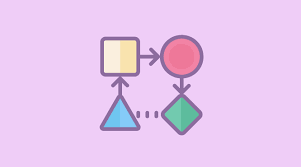

¿Ques son las figuras gemetricas?
Autor:Juan Perez Jolota

Definicion:
Las figuras geométricas son formas planas o espaciales que se definen por un conjunto de puntos y líneas. Estas figuras son el resultado del estudio de la geometría, una rama de las matemáticas que se ocupa de las propiedades y las relaciones de puntos, líneas, superficies y sólidos. Las figuras geométricas se clasifican en dos categorías principales:
1. Figuras geométricas planas (bidimensionales):
Son aquellas que tienen dos dimensiones:
largo y ancho, pero no tienen grosor. Se representan en un plano y algunos ejemplos son:
2. Figuras geométricas espaciales (tridimensionales):
Son figuras que tienen tres dimensiones: largo, ancho y altura (o profundidad). Algunos ejemplos son:
Cubo: Figura tridimensional con seis caras cuadradas. Esfera: Figura tridimensional que consiste en todos los puntos a una distancia constante de un centro.
Cilindro: Figura con dos bases circulares y un cuerpo lateral recto.
Pirámide: Figura con una base poligonal y caras laterales triangulares que convergen en un punto.
Cono: Figura con una base circular y una superficie que se estrecha hasta un solo punto.